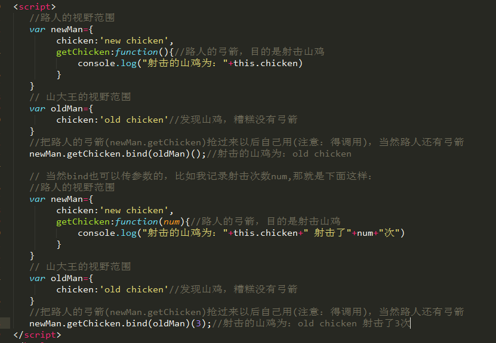
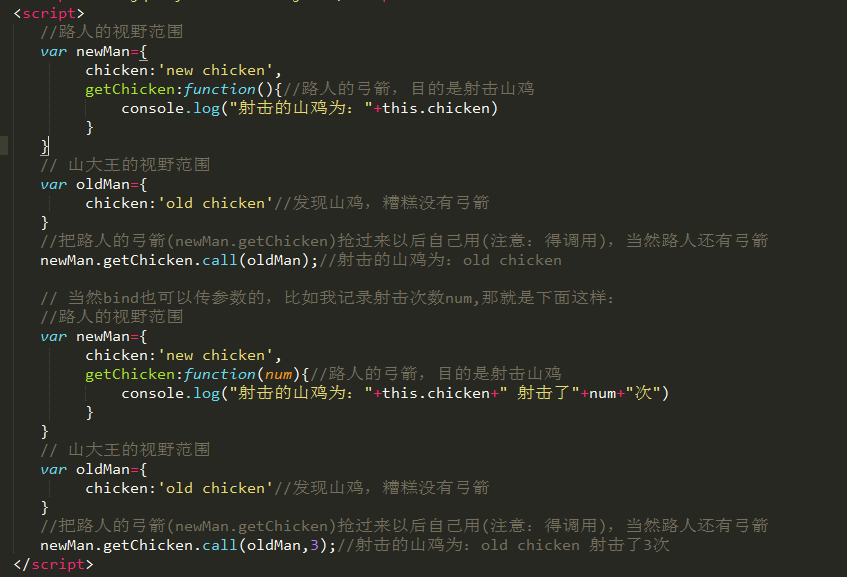
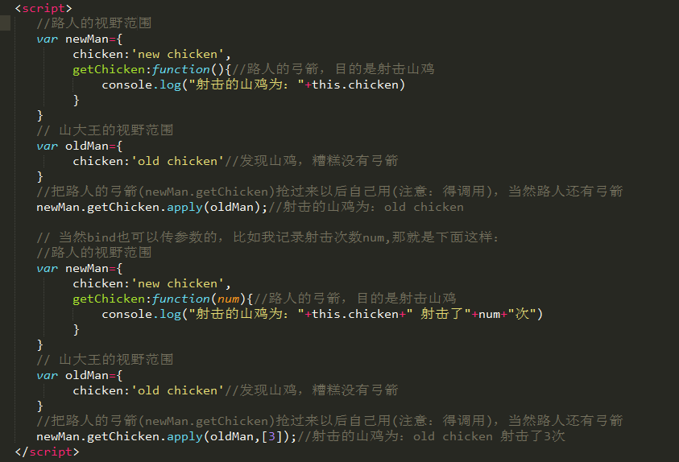

最开始关于call、apply、bind函数的使用时，总是很模糊，不知道用哪一个，this指向问题等，看了一些别人的总结后有了一定的理解，所以特地记录一下：
要搞清楚call、apply、bind我们从三个问题入手，解决了三个问题这三个方法也差不多了
1：为啥我们生产过程中会用到call、apply、bind及它们到底是干嘛的
2：它们具体怎么使用
3：三个有没有什么区别
接下来我们说一个场景：有一天一个山大王（oldMan）带着小罗罗们在巡山，手里是一把大刀，逛着逛着突然停下了脚步，为啥？因为他们看见一个人(newMan)正在拉弓准备射击远处的一只肥壮的山鸡，一瞬间newMan射中了那只山鸡兴高采烈的准备 烤山鸡，山大王羡慕极了，因为自己也发现了一只山鸡可惜没有弓箭。可是自己手里只有一把大刀根本抓不止山鸡，这时候小罗罗有的说直接把弓箭抢过来然后射击山鸡，有的说暴力不好最好是先借一下弓箭，射击山鸡后再还给他就是。
山大王做法1：直接抢过来用，不还了----bind。

山大王做法2：先借用一下，用完就还----call

山大王做法2：先借用一下，用完就还----apply(就是传参数方式是数组而已和call没啥区别)

最后我们来说一下一开始提到的三个问题：
先把三个方式放在一起：
newMan.getChicken.bind(oldMan)(3);//射击的山鸡为：old chicken 射击了3次
newMan.getChicken.call(oldMan,3);//射击的山鸡为：old chicken 射击了3次
newMan.getChicken.apply(oldMan,[3]);//射击的山鸡为：old chicken 射击了3次
1为啥要用bind、call、apply。就是自己解决不了，但是别人能解决，把别人的方法或抢过来（bind绑定）,或借过来使用一下下（call、apply,能用但是自己对象里任然没有这个方法），这也解决了 this指向问题：
bind: 强行把当前使用该方法的对象指向了自己，讲白了就是把方法强行放进自己的作用域里了，bind只干了这些事情，但是像用方法，得再加（）调用
call: call就是直接执行一个自己指定this指向的函数，参数是一个一个传递。感觉像是人家调用自己的方法时趁机偷到自己的怀抱里
apply: 同上，就是参数是数组形式而已
2 使用方法上面说了
3 区别在1中说了
如果有理解错误的地方希望大家批评指正，谢谢。
结语：点点滴滴，慢慢积累，平生多阅历，胸中有丘壑。